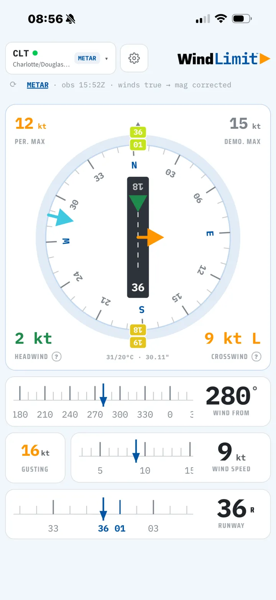
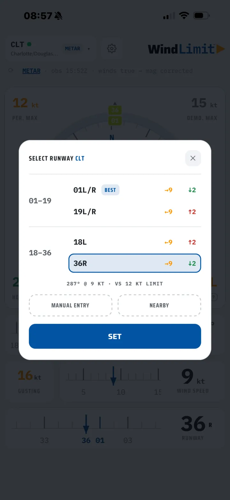
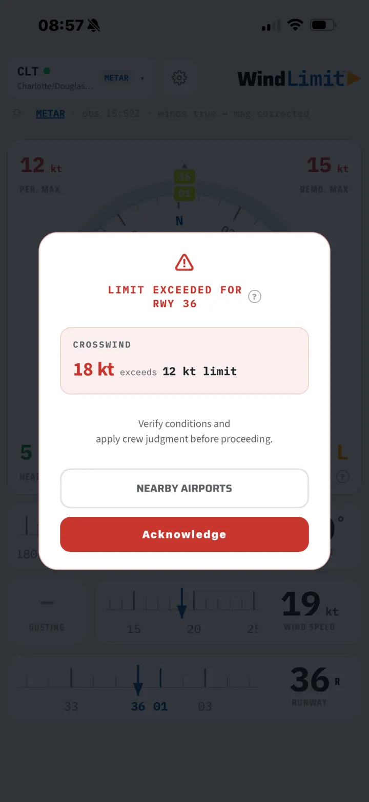
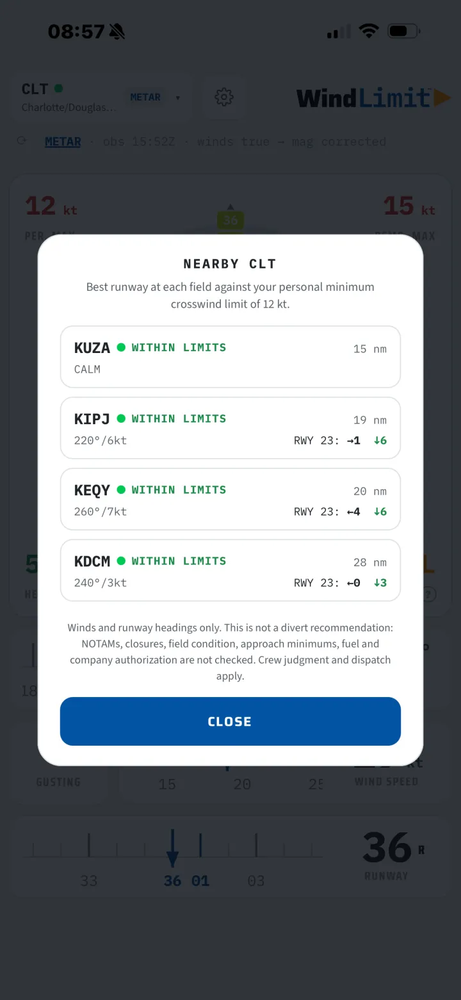
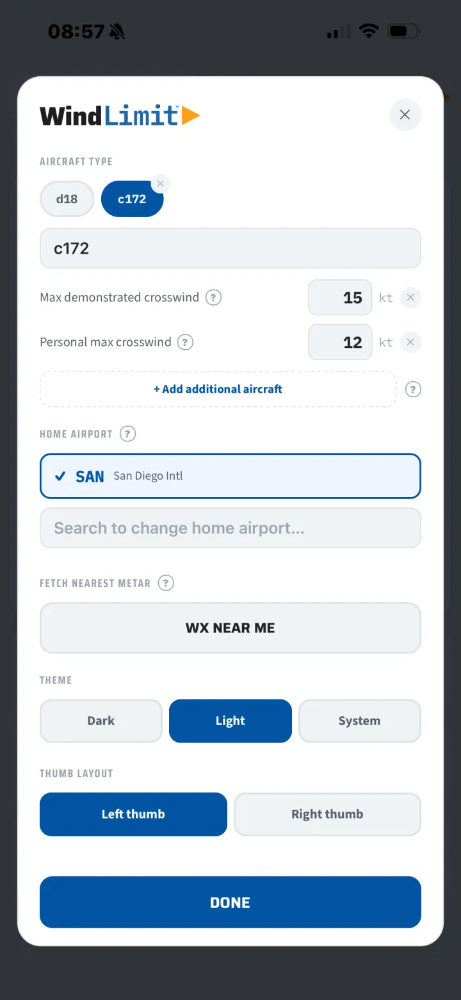

WindLimit checks the wind against your aircraft and your personal minimums in real time, with live METAR winds and a plain warning the moment a runway is out of limits.
Free to download. No account. No subscription. Your settings stay on your device.

Screenshot 01Main calculator screen: runway, wind, crosswind and head or tailwind read against the limit.'}))">The crosswind component is a simple calculation, right up until it is gusting 25, you are tired, and the runway options are changing on you. WindLimit runs the numbers every time, against the values you actually fly, so the answer is on the screen instead of in your head.
Set your aircraft's demonstrated crosswind and your own personal minimums once. Every reading is measured against those.
The runway picker shows crosswind and head or tailwind for both ends, with the better end badged, so you are not working them one at a time.
When the wind exceeds your limit, WindLimit says so plainly. The crosswind figure shifts from normal to amber to red as it climbs.
METAR, and TAF when you want it, pulled straight from aviationweather.gov. Only the airport identifier leaves your phone.
Nearby Airports lists fields around you with live wind, the best runway, and a within-limits read for each.
In the upgradeOne-handed layout, a dark theme for night, large-text support, and a guided tour that teaches by doing. No login, no clutter.
Every screen is built for a glance, in daylight or at night.

02 · Runway pickerBoth ends side by side, better end badged BEST.'}))">
03 · Over limitRunway-aware alert when the wind exceeds your limit.'}))">
04 · NearbyFields around you with wind, best runway, within-limits read.'}))">
05 · SettingsAircraft, demonstrated and personal crosswind, home airport, theme.'}))">Picking the airport, reading the wind, checking both runway ends, and getting the limit. About two minutes.
The free version does the job on its own. The one-time upgrade removes ads for good and adds the planning tools.
WindLimit is built and flown by a working regional airline first officer. It exists because a fast, honest crosswind check against real personal minimums is something every line pilot does and no free tool did well.
The one-time upgrade removes ads, adds the planning features, and helps keep the app maintained and current. No account is ever created, and nothing you enter in the app, not your airports, weather, aircraft, or minimums, is collected.
No. It is an informational tool for situational awareness. Official weather sources, aircraft documentation, and your operator's procedures govern. The pilot in command remains responsible for every operational decision.
No. There is no sign-up and no login. Your airports, aircraft, and minimums stay on your device.
Your settings and aircraft profiles are stored on the device and load without a connection. Fetching live weather needs one.
Any. You enter the demonstrated crosswind and the limits you fly, so it works for a light single or a regional jet.
No. The upgrade is a single purchase. If you would rather not buy, a rewarded ad unlocks the same features for 24 hours.
iPhone, on iOS. It is available on the App Store.
Free on the App Store. One-time $2.99 upgrade to remove ads and unlock the planning tools.
WindLimit is an informational tool for situational awareness only. It is not a substitute for official weather sources, aircraft flight manuals, or your operator's procedures. Wind and weather data are provided by third parties and may be delayed or inaccurate. The pilot in command remains solely responsible for verifying limits and operating the aircraft within them.